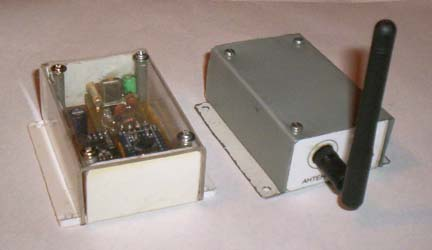
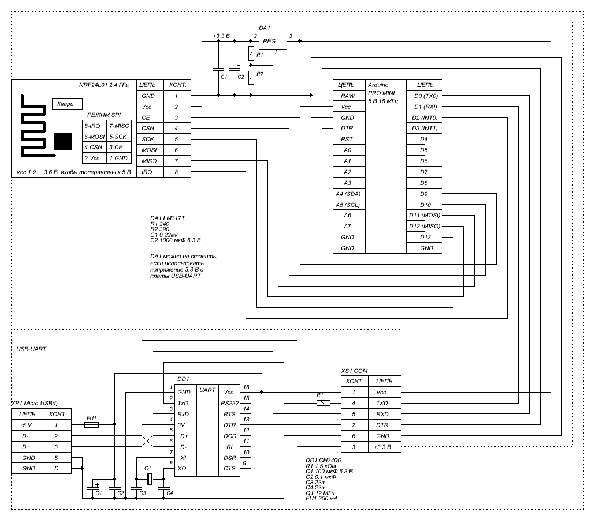
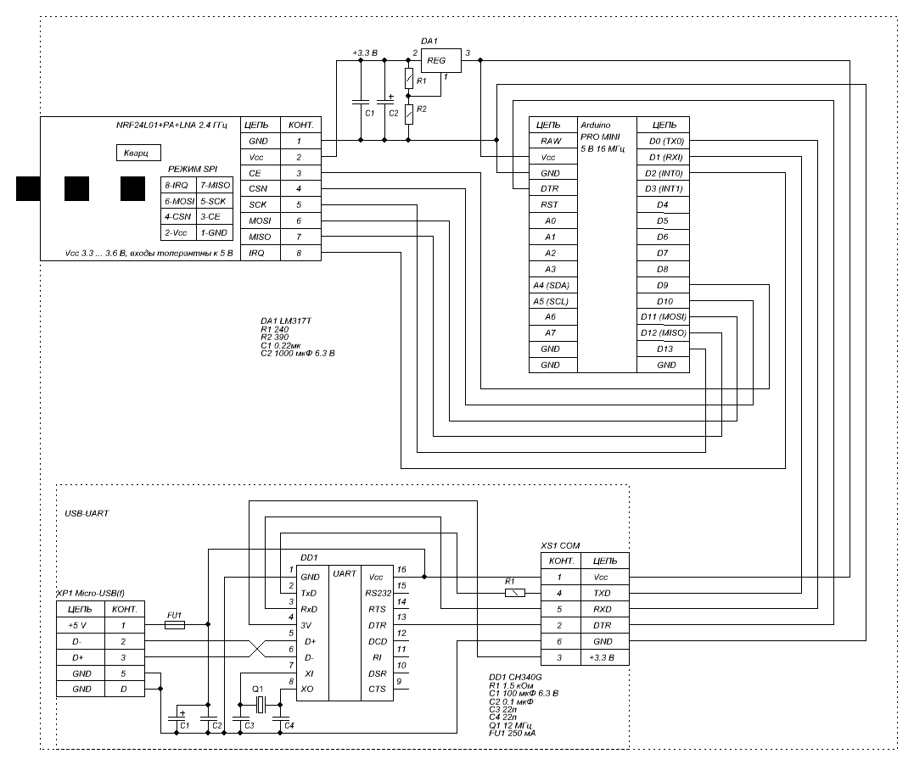
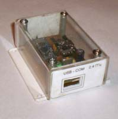
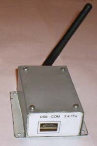
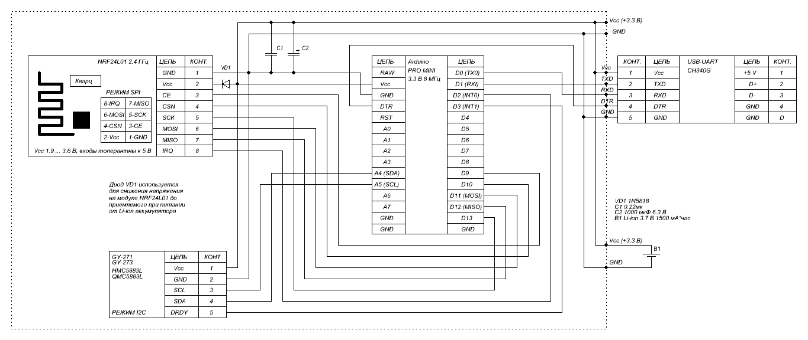
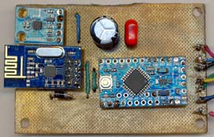
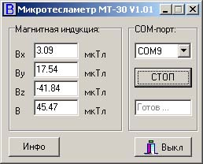

Преобразователь интерфейса USB -
COM-порт - радиоканал (2.4 ГГц)

Введение
В ряде случаев для передачи данных с удаленных устройств
(датчиков) к компьютеру нельзя или неудобно использовать проводную линию связи
(например, в случае движущихся датчиков). Возможным способом решения проблемы
является передача данных по радиоканалу, например, в диапазоне частот
ISM (Industrial, Scientific, Medical) 2.4 ГГц (2400
... 2483.5 МГц), где можно
использовать нелицензируемые устройства с дальностью работы примерно до 100
метров (работающие внутри зданий и производственных территорий, а также
с мощностью
излучения передающих устройств до 100 мВт включительно). Устройство приема и
передачи данных по радиоканалу может быть построено по следующей схеме. К
USB-порту
компьютера подключается преобразователь USB - COM-порт,
связанный с микроконтроллером, который, в свою очередь, управляет
программируемым трансивером (приемо-передатчиком), работающим в указанном
диапазоне частот. Аналогичный микроконтроллер и такой же трансивер
устанавливаются на стороне датчика.
Схема электрическая принципиальная
Преобразователь интерфейса USB - COM-порт -
радиоканал 2.4 ГГц собран из готовых модулей.
Преобразователь USB - COM-порт построен в виде
отдельного модуля на микросхеме CH340G [5]. В качестве
микроконтроллера используется
Arduino Pro mini (микроконтроллер на микросхеме
ATmega328) [2] со встроенным
отладчиком, позволяющим использовать программы, написанные на языке
C в среде программирования Arduino.
Приемо-передатчик диапазона 2.4 ГГц - узел на микросхеме
NRF24L01
(вариант 1 - без усилителя на дальность примерно до 10 м, вариант 2 - с
усилителем на дальность до 100 м). Питание
преобразователя интерфейса осуществляется непосредственно от
USB-порта.

Рис. 1. Схема электрическая принципиальная первого варианта
преобразователя интерфейса с радиоканалом.

Рис. 2. Схема электрическая принципиальная второго варианта
преобразователя интерфейса с радиоканалом.
Конструкция
Модули преобразователя интерфейса монтируются на кросс-плату.
Кросс-плата может устанавливается в корпус.

Рис. 3. Внешний вид первого варианта преобразователя
интерфейса с радиоканалом (кросс-плата с модулями в диэлектрическом корпусе).

Рис. 4. Внешний вид второго варианта преобразователя
интерфейса с радиоканалом (кросс-плата с модулями в корпусе и наружная антенна).
Датчик (магнитометр с передатчиком)
В качестве примера совместного использования преобразователя
интерфейса на рис. 5 приведена схема магнитометра [4]
с магниторезистивным датчиком
QMC5883 (HMC5883) [1].
Магнитометр с передатчиком собран из готовых модулей (датчик, микроконтроллер,
трансивер), размещенных на кросс-плате (рис. 6). Питание автономное от
Li-ion аккумулятора напряжением 3.7 В. Для программирования
микроконтроллера используется отдельная плата преобразователя интерфейса
USB - COM-порт, подключаемая к кросс-плате при необходимости.

Рис. 5. Схема электрическая принципиальная магнитометра с
передатчиком данных по радиоканалу.

Рис. 6. Внешний вид платы магнитометра с передатчиком данных
по радиоканалу.
Программное обеспечение
Вариант программы для приемника на языке
C в среде Arduino:
|
#include
<nRF24L01.h>
#include <RF24.h>
#include <RF24_config.h>
#include <SPI.h>
const uint64_t pipe = 0xF0F1F2F3F4LL ; //
идентификатор приемопередающего канала
RF24 radio(9, 10); // CE, CSN подключены к выходам D9 и D10
Pro mini
byte massiv[4] ;
void setup()
{
Serial.begin(9600) ; // скорость передачи данных 9600
radio.begin() ; // начало работы с чипом nRF24L01
delay(2) ; // задержка на 2
мс
radio.setChannel(9) ; // выбор коммуникационного канала (0
- 125)
radio.setDataRate(RF24_1MBPS) ; // скорость
передачи данных
radio.setPALevel(RF24_PA_MAX) ; // максимальная мощность
передатчика 0
dBm
radio.openReadingPipe(1, pipe) ; // открываем один канал с
идентификатором pipe = 0xF0F1F2F3F4LL
radio.startListening() ; // включаем приемник, начинаем
прослушивание
}
void loop()
{
if (radio.available()){ // проверяем буфер
float data[4] ; // создаем массив из 4-х переменных
radio.read(&data, sizeof(data)) ; // читаем данные,
указываем сколько байт читать
Serial.print("Bx: ") ;
// выводим значение компоненты Bx магнитной
индукции
Serial.print(data[0]) ;
Serial.println(" mkT") ;
Serial.print("By: ") ; // выводим значение
компоненты
By магнитной индукции
Serial.print(data[1]) ;
Serial.println(" mkT") ;
Serial.print("Bz: ") ; // выводим
значение компоненты Bz магнитной
индукции
Serial.print(data[2]) ;
Serial.println(" mkT") ;
Serial.print("B: "); // выводим значение
модуля
B магнитной индукции
Serial.print(data[3]) ;
Serial.println(" mkT") ;
Serial.println() ;
} else {
Serial.println("nodata") ; // сообщение об отсутствии
данных
}
} |
Вариант программы для магнитометра с
передатчиком на языке C в среде
Arduino:
|
//Датчик
QMC5883
#include <SPI.h>
#include <Wire.h> // I2C Arduino Library
#include <nRF24L01.h>
#include <RF24.h>
#define addr 0x0D // I2C Address for QMC5883L
#define reg_2G 0x0D // Загрузка режима работы и диапазона
измерений 2 Гс в регистр 09H
#define Bxoff 1.5 // Сдвиг по x,
мкТл
#define Byoff 1.0 //
Сдвиг по y, мкТл
#define Bzoff 0.0
//
Сдвиг по z, мкТл
#define Num_Of_Meas 250 // Число измерений для усреднения
int x, y, z
;
//
triple axis data. Данные
с регистров
long x1, y1, z1 ; // Суммированные
данные для усреднения
double Bx, By, Bz, B ; // Значения магнитной индукции в мкТл
int i ;
// Счетчик
double Kx190 = 120.0 ; // калибровочный
коэффициент по x
double Ky190 = 120.0 ; // калибровочный
коэффициент по y
double Kz190 = 120.0 ; // калибровочный
коэффициент по z
int RDY ;
// готовность данных
const uint64_t pipe = 0xF0F1F2F3F4LL ; // идентификатор
приемопередающего канала
RF24 radio(9, 10)
; // CE, CSN подключены
к выходам D9 и D10 Pro mini
void setup(){
Serial.begin(9600) ;
pinMode(3, INPUT)
; //
вход
DRDY
radio.begin()
; // начало работы с чипом nRF24L01
delay(2) ; // задержка на 2 мс
radio.setChannel(9)
; // канал
(0 - 127)
radio.setDataRate(RF24_1MBPS) ; // скорость передачи
данных
radio.setPALevel(RF24_PA_MAX)
; // максимальная мощность передатчика
0
dBm
radio.openWritingPipe(pipe) ;
// открываем канал с идентификатором pipe = 0xF0F1F2F3F4LL
}
void loop()
{
measure_2G() ;
Calc_B() ;
float data[4] ; // массив данных
data[0] = Bx ;
data[1] = By ;
data[2] = Bz ;
data[3] = B ;
radio.write(&data, sizeof(data)) ; //
отправка данные с указанием размера
}
void measure_2G()
{ // Измерение
Wire.begin()
;
Wire.beginTransmission(addr) ;
Wire.write(0x0B)
; // Установка QMC5883L
Wire.write(0x01)
; // Запись в
регистр
Wire.endTransmission() ;
Wire.beginTransmission(addr) ;
Wire.write(0x09)
; // Установка
QMC5883L
Wire.write(reg_2G ) ; // Запись в регистр
// Set the Register 0x09 to 0x0D -
OSR_512_RNG_2G_ODR_200Hz_Mode_Continuous
Wire.endTransmission()
;
x1 = 0 ;
y1 = 0 ;
z1 = 0 ;
for(i = 1; i<=Num_Of_Meas; i++)
{
lab1: //
опрос по выводу
DRDY
if (digitalRead(3) == LOW) {goto lab1 ;}
Wire.beginTransmission(addr) ;
Wire.write(0x00)
; //start with register 3
Wire.endTransmission() ;
//
Read the data.. 2 bytes for each axis.. 6
total bytes
Wire.requestFrom(addr,
6)
;
if (6 <=
Wire.available()) {
x = Wire.read() ; //
MSB x
x |= Wire.read() << 8 ; //
LSB x
y = Wire.read() ; //
MSB z
y |= Wire.read() << 8 ; //
LSB z
z = Wire.read() ; //
MSB y
z |= Wire.read() << 8 ; //
LSB y
}
x1 = x1 + x ;
y1 = y1 + y ;
z1 = z1 + z ;
}
void Calc_B() {
// Вычисление
Bx = Bxoff +
(double)(x1)/Kx190/(double)Num_Of_Meas ;
By = Byoff + (double)(y1)/Ky190/(double)Num_Of_Meas ;
Bz = Bzoff + (double)(z1)/Kz190/(double)Num_Of_Meas ;
B = sqrt(Bx*Bx+By*By+Bz*Bz) ;
} |
Для обеспечения совместной работы
COM-порта преобразователя интерфейса с
компьютером необходимо установить программу-драйвер для микросхемы
CH340 (в некоторых случаях этого не требуется). Интерфейс
одного из вариантов программы для приема данных от магнитометра компьютером и
вывода показаний на монитор показан на рис. 7. Файл программы:
MT_30.rar (~177 Кб, архиватор
WinRAR). Скопированный файл может быть проверен на
отсутствие вирусного кода в режиме on-line [6].

Рис. 7. Интерфейс программы для
вывода показаний магнитометра на монитор компьютера.
Ссылки:
-
http://honeywell.ru (сайт фирмы Honeywell)
- Аппаратная платформа Ардуино |
Arduino.ru. Электронный ресурс:
http://arduino.ru
. Доступен по состоянию на 16.12.2017.
- Магда Ю. С. Программирование последовательных
интерфейсов. - СПб.: БХВ-Петербург, 2009. - 304 с. ил. +
CD-ROM - (Профессиональное программирование)
-
Магнитометр с магниторезистивным датчиком QMC5883 (HMC5883) для мониторинга
слабых постоянных полей и передачи данных по радиоканалу 2.4 ГГц
- Преобразователь
интерфейса USB - RS-232 (COM-порт)
- Проверка
файлов пользователя на наличие вирусного кода в режиме on-line
Словарь
терминов:
- Интерфейс
(от англ. interface)
- общая граница между двумя функциональными объектами, требования к которой
определяются стандартом, совокупность средств, методов и правил
взаимодействия между элементами системы.
26.12.2017
06.01.2018
08.01.2018
Альтернативные источники
энергии
Компьютеры и
Интернет
Магнитные поля
Механотронные системы
Перспективные
разработки
Электроника и технология
Главная страница